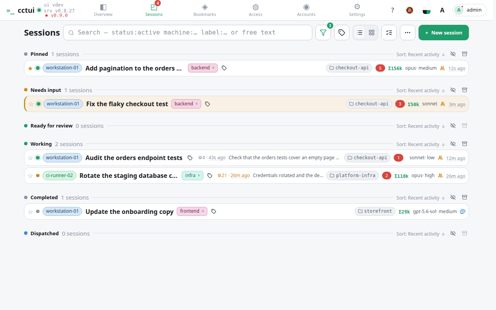
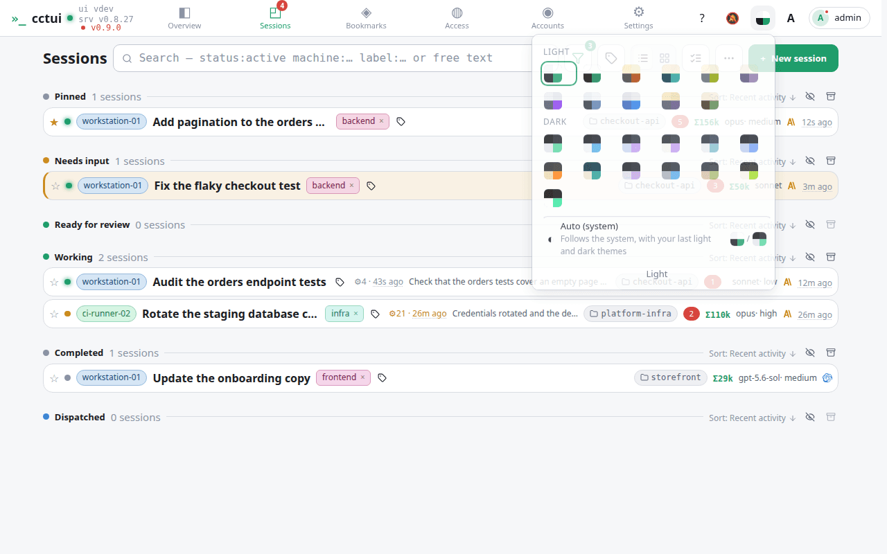

<h1>Read the fleet at a glance</h1>
<h2>viewport=desktop theme=light</h2>
<figure>

</figure>
<figure>

<figcaption><strong>Every screen, in your palette</strong> Twenty-one built-in themes, light and dark; the whole interface follows the swatch you pick.</figcaption>
</figure>
